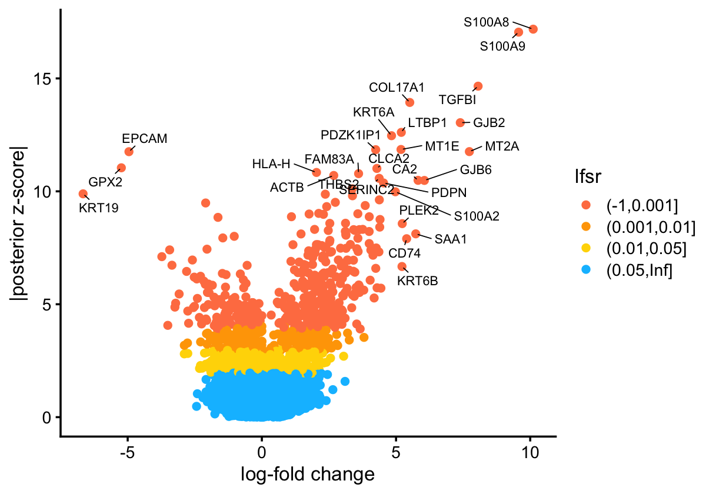

Last updated: 2023-08-08
Checks: 7 0
Knit directory: gbcd-workflow/analysis/
This reproducible R Markdown analysis was created with workflowr (version 1.7.0.5). The Checks tab describes the reproducibility checks that were applied when the results were created. The Past versions tab lists the development history.
Great! Since the R Markdown file has been committed to the Git repository, you know the exact version of the code that produced these results.
Great job! The global environment was empty. Objects defined in the global environment can affect the analysis in your R Markdown file in unknown ways. For reproduciblity it’s best to always run the code in an empty environment.
The command set.seed(1) was run prior to running the
code in the R Markdown file. Setting a seed ensures that any results
that rely on randomness, e.g. subsampling or permutations, are
reproducible.
Great job! Recording the operating system, R version, and package versions is critical for reproducibility.
Nice! There were no cached chunks for this analysis, so you can be confident that you successfully produced the results during this run.
Great job! Using relative paths to the files within your workflowr project makes it easier to run your code on other machines.
Great! You are using Git for version control. Tracking code development and connecting the code version to the results is critical for reproducibility.
The results in this page were generated with repository version f2b1d24. See the Past versions tab to see a history of the changes made to the R Markdown and HTML files.
Note that you need to be careful to ensure that all relevant files for
the analysis have been committed to Git prior to generating the results
(you can use wflow_publish or
wflow_git_commit). workflowr only checks the R Markdown
file, but you know if there are other scripts or data files that it
depends on. Below is the status of the Git repository when the results
were generated:
working directory clean
Note that any generated files, e.g. HTML, png, CSS, etc., are not included in this status report because it is ok for generated content to have uncommitted changes.
These are the previous versions of the repository in which changes were
made to the R Markdown (analysis/gbcd_hnscc_intro.Rmd) and
HTML (docs/gbcd_hnscc_intro.html) files. If you’ve
configured a remote Git repository (see ?wflow_git_remote),
click on the hyperlinks in the table below to view the files as they
were in that past version.
| File | Version | Author | Date | Message |
|---|---|---|---|---|
| Rmd | f2b1d24 | Peter Carbonetto | 2023-08-08 | workflowr::wflow_publish("gbcd_hnscc_intro.Rmd", verbose = TRUE) |
| html | d40f7d0 | Peter Carbonetto | 2023-08-08 | Built the gbcd_hnscc_intro workflowr page. |
| Rmd | f9fe46d | Peter Carbonetto | 2023-08-08 | workflowr::wflow_publish("gbcd_hnscc_intro.Rmd", verbose = TRUE) |
This vignette shows how to apply “generalized binary covariance decomposition” (GBCD) to jointly analyze single-cell RNA-seq (scRNA-seq) data from malignant cells collected from multiple patients and/or studies, using a head and neck squamous cell carcinoma (HNSCC) dataset from Puram et al. 2017.
GBCD can effectively dissect tumor transcriptional heterogeneity into patient/study-specific and shared gene expression programs (GEPs). GBCD is “unsupervised” in that, unlike tumor-by-tumor (e.g., Puram et al. (2017)) and many harmonization approaches (e.g., Harmony, Liger), it does not use information about which cell comes from which tumor or study. Instead, GBCD only requires the combined scRNA-seq data from all tumors, which are stored as an \(N \times J\) matrix \(Y\) of expression values with entries \(y_{ij}\), where \(i=1,\dots,N\) indexes malignant cells and \(j=1,\dots,J\) indexes genes. In typical applications, \(Y\) contains log-transformed pseudo-count-modified UMI counts (“log-pc counts”).
GBCD ultimately yields a decomposition of the expression data matrix \(Y\) into matrices \(L\) and \(F\) such that \(Y \approx L F^T\), or equivalently, \[y_{ij} \approx \sum_{k=1}^K l_{ik} f_{jk}.\] The \(K\) components should be interpretable as GEPs, with \(l_{ik}\) representing the membership of cell \(i\) in GEP \(k\), and \(f_{jk}\) representing the effect of GEP \(k\) on the expression of gene \(j\). When \(y_{ij}\) are log-pc counts, each \(f_{jk}\) approximately represents the log-fold change (LFC) associated with membership in GEP \(k\), so we refer to the \(f_{jk}\) values as LFCs, and to the vector of LFCs \((f_{1k}, \dots, f_{Jk})^T\) as the “signature” of GEP \(k\).
We begin our analysis by loading the R packages used in the analysis, as well as some custom functions implementing the GBCD model fitting and interpretation.. Then we show how to apply GBCD to the HNSCC dataset step-by-step.
library(ggplot2)
library(cowplot)
library(RColorBrewer)
library(ggrepel)
library(pheatmap)
library(gridExtra)
library(Seurat)
library(Matrix)
library(ebnm)
library(flashier)
library(magrittr)
library(ashr)
source("../code/fit_cov_ebnmf.R")This data set contains gene expression data for n = 2,176 malignant cells collected in primary tumors from 10 HNSCC patients, as well as matching lymph node (LN) metastases from 5 of these patients. Puram et al. (2017) found that each of these 10 patients mapped to a molecular subtype of HNSCC, whose signatures were previously defined by analysis of bulk expression data of 279 TCGA HNSCC tumors.
Unlike more recently generated data sets, the HNSCC data are not UMI counts; rather, they are read counts produced by SMART-Seq2. Following Puram et al. (2017), we define the transformed counts as \(y_{ij} = \log_2(1 + \mathrm{TPM}_{ij}/10)\), where \(\mathrm{TPM}_{ij}\) is the transcript-per-million (TPM) value for gene \(j\) in cell \(i\).
load("../hnscc/hnscc.RData")
dim(Y)
print(head(info),row.names = FALSE)
# [1] 2176 17113
# cell.id lymph.node cancer.cell cell.type sample.id subject
# HN26_P14_D11_S239_comb 1 1 0 T26 MEEI26_LN
# HN26_P25_H09_S189_comb 1 1 0 T26 MEEI26_LN
# HN26_P14_H06_S282_comb 1 1 0 T26 MEEI26_LN
# HN25_P25_C04_S316_comb 1 1 0 T25 MEEI25_LN
# HN26_P25_C09_S129_comb 1 1 0 T26 MEEI26_LN
# HNSCC26_P24_H05_S377_comb 1 1 0 T26 MEEI26_LN
# subtype
# Atypical
# Atypical
# Atypical
# Basal
# Atypical
# AtypicalWe plot the 2-D t-SNE embedding of these \(2,176\) malignant cells, which are colored by patient of origin and tumor stage (primary tumor, LN metastasis), and shaped by tumor molecular subtype. We set seed to make the t-SNE reproducible.
set.seed(100)
hnscc <- CreateSeuratObject(counts = t(Y), project = "HNSCC", meta.data = info)
hnscc <- FindVariableFeatures(hnscc, selection.method = "vst",
nfeatures = 5000)
all.genes <- rownames(hnscc)
hnscc <- ScaleData(hnscc, features = all.genes)
hnscc <- RunPCA(hnscc, features = VariableFeatures(object = hnscc),
npcs = 50, verbose = FALSE)
hnscc <- RunTSNE(hnscc, dims = 1:50)Due to the presence of strong inter-tumor heterogeneity, these cells demonstrate strong patient effects that are typical of cancer data; the major structure in the t-SNE visualization is the clustering of the cells by patient.
DimPlot(hnscc, label = TRUE, repel = TRUE, pt.size = 1, reduction = "tsne",
group.by = "subject", shape.by = "subtype", cols = subject_col) +
guides(shape = guide_legend(override.aes = list(size = 3)), ncol = 1) +
theme(text = element_text(size = 10)) +
scale_shape_manual(values = c(15,16,18))
| Version | Author | Date |
|---|---|---|
| d40f7d0 | Peter Carbonetto | 2023-08-08 |
This is accomplished with a call to the custom function
flash_fit_cov_ebmf.
To fit GBCD, you need to specify Kmax, an upper bound of
the number of components \(K\), for
initialization; the number of GEPs returned by GBCD is close to but
often not equal to (and can be larger than) Kmax. Generally
speaking, a larger Kmax allows for identifying finer
structure in tumor transcriptional heterogeneity at the expense of
higher computational cost. A good choice of Kmax depends on
the complexity of the analyzed data (e.g., the number of patients and
studies contained), and is often unknown in advance. You1 are encouraged
to explore and compare the results for different values of
Kmax. After some initial exploration, we set
Kmax to 24.
You also need to specify a prior for GEP membership values. GBCD assigns a “generalized binary” (GB) prior independently to each entry of \(L\), \[l_{ik}\sim (1-\pi_k^l) \delta_0 + \pi_k^l \: N_{+} (\mu_k, \sigma_k^2),\] where the ratio \(\sigma_k/\mu_k\) is fixed at some pre-specified small value. In this analysis, we set \(\sigma_k/\mu_k = 0.04\) for all \(k\).
fit.gbcd <-
flash_fit_cov_ebnmf(Y = Y, Kmax = 24,
prior = flash_ebnm(prior_family = "generalized_binary",
scale = 0.04),
extrapolate = FALSE)Note that you can choose other nonnegative priors for GEP membership
values so long as they are defined in the ebnm package. For
example, you can chose a point-exponential prior by setting
prior = ebnm::ebnm_point_exponential.
The time to fit GBCD depends on the choice of Kmax and
the size of the data set being analyzed. It took us a few hours to fit
the GBCD model with Kmax = 24 to the HNSCC data set.
Since it takes a while to fit GBCD to the HNSCC dataset, we directly load in the saved output from the above call and show how to interpret the results.
load("../hnscc/hnscc_gbcd.RData")The flash_fit_cov_ebnmf output contains the membership
estimates, stored as an \(n \times K\)
matrix,
dim(fit.gbcd$L)
fit.gbcd$L[1:4,1:5]
# [1] 2176 29
# Baseline GEP1 GEP2 GEP3
# HN26_P14_D11_S239_comb 0.7404634 3.538229e-110 2.323954e-141 9.039494e-01
# HN26_P25_H09_S189_comb 0.6666176 5.623800e-137 9.582078e-135 7.786085e-01
# HN26_P14_H06_S282_comb 0.7976365 8.636394e-136 2.833297e-01 7.258564e-01
# HN25_P25_C04_S316_comb 0.4193556 6.158516e-137 5.124139e-01 4.286821e-135
# GEP4
# HN26_P14_D11_S239_comb 4.589753e-141
# HN26_P25_H09_S189_comb 9.840882e-136
# HN26_P14_H06_S282_comb 2.828108e-122
# HN25_P25_C04_S316_comb 1.527244e-135and posterior statistics for the LFC estimates, including the posterior means, stored as an \(m \times K\) matrix,
dim(fit.gbcd$F$lfc)
fit.gbcd$F$lfc[1:4,1:5]
# [1] 17113 29
# Baseline GEP1 GEP2 GEP3 GEP4
# C9orf152 0.0001609319 0.0002929911 0.000234652 -0.0004093085 0.0002814196
# ELMO2 2.0116827172 -0.0060056851 -0.601995065 0.0387999604 -0.0188075633
# PNMA1 1.6386413103 -0.0021806303 -1.244428917 0.0164347046 -0.0059650037
# MMP2 0.4807052706 -0.3115376229 1.673189435 -0.4256140576 -1.1229331251We now examine at the entries of the L matrix giving
membership estimates of cell \(i\) in
GEP \(k\). Here we visually compare the
memberships to the patient labels and provided tumor subtype annotations
with a heatmap.
anno <- data.frame(subject = info$subject,
subtype = info$subtype)
rownames(anno) <- rownames(fit.gbcd$L)
anno_colors <- list(subject = subject_col,
subtype = subtype_col)
cols <- colorRampPalette(c("gray96","red"))(50)
brks <- seq(0,1,0.02)
rows <- order(anno$subject)
p <- pheatmap(fit.gbcd$L[rows, -1], cluster_rows = FALSE, cluster_cols = FALSE,
show_rownames = FALSE, annotation_row = anno,
annotation_colors = anno_colors, annotation_names_row = FALSE,
angle_col = 45, fontsize = 8, color = cols, breaks = brks,
main = "")
print(p)
| Version | Author | Date |
|---|---|---|
| d40f7d0 | Peter Carbonetto | 2023-08-08 |
This heatmap shows the membership values of the n = 2,176 cells (the rows in the heatmap) and the 28 GEPs (the columns in the heatmap). (The membership values for the “baseline” GEP are not shown.) Cells are arranged top-to-bottom by tumor molecular subtype and patient of origin. We rescaled the membership values separately for each GEP so that the maximum membership for each GEP is always 1.
From this heatmap, we see that GEPs 1, 2 and 3 correspond closely to the molecular subtypes previously defined based on bulk RNA-seq data: GEP1 is largely active only in cells from the 2 classical patients, GEP2 is mainly active in cells from the 7 basal patients, and GEP3 is mainly active in cells from the 1 atypical patient. This demonstrates that GBCD can reconstruct the molecular subtype information from the single cell data alone.
Among other GEPs, some are active predominantly in an individual patient and can thus be interpreted as patient-specific GEPs. We interpret GEPs 4, 7, 9, 11, 25, 27 as “patient-specific GEPs”; the remaining GEPs are shared across multiple patients but are capturing something different than these previously defined molecular subtypes.
The GEP signature estimates \(f_{jk}\) represent approximately the log-fold change (using t he base-2 logarithm) associated with membership in GEP \(k\). We take the approach commonly used in differential expression analysis and create a “volcano plot” to visualize the gene signature for a GEP. As an example, this is the volcano plot for GEP2:
k <- "GEP2"
pdat <- data.frame(gene = rownames(fit.gbcd$F$lfc),
lfc = fit.gbcd$F$lfc[,k],
z = abs(fit.gbcd$F$z_score[,k]),
lfsr = fit.gbcd$F$lfsr[,k],
stringsAsFactors = FALSE)
pdat <- transform(pdat,lfsr = cut(lfsr, c(-1,0.001,0.01,0.05,Inf)))
rows <- with(pdat, which(!(abs(lfc) > quantile(abs(lfc),0.999) | (z > 10))))
pdat[rows, "gene"] <- ""
ggplot(pdat, aes(x = lfc, y = z, color = lfsr, label = gene)) +
geom_point() +
geom_text_repel(color = "black", size = 2.3, segment.color = "black",
segment.size = 0.25, min.segment.length = 0,
max.overlaps = Inf, na.rm = TRUE) +
scale_color_manual(values = c("coral","orange","gold","deepskyblue")) +
labs(x = "log-fold change", y = "|posterior z-score|") +
theme_cowplot(font_size = 10)
| Version | Author | Date |
|---|---|---|
| d40f7d0 | Peter Carbonetto | 2023-08-08 |
The significance measure here is not a p-value, but rather a local false sign rate (lfsr).
This is the version of R and the packages that were used to generate these results.
sessionInfo()
# R version 3.6.2 (2019-12-12)
# Platform: x86_64-apple-darwin15.6.0 (64-bit)
# Running under: macOS Catalina 10.15.7
#
# Matrix products: default
# BLAS: /Library/Frameworks/R.framework/Versions/3.6/Resources/lib/libRblas.0.dylib
# LAPACK: /Library/Frameworks/R.framework/Versions/3.6/Resources/lib/libRlapack.dylib
#
# locale:
# [1] en_US.UTF-8/en_US.UTF-8/en_US.UTF-8/C/en_US.UTF-8/en_US.UTF-8
#
# attached base packages:
# [1] stats graphics grDevices utils datasets methods base
#
# other attached packages:
# [1] ashr_2.2-57 flashier_0.2.51 magrittr_2.0.1 ebnm_1.0-54
# [5] Matrix_1.3-4 Seurat_3.2.3 gridExtra_2.3 pheatmap_1.0.12
# [9] ggrepel_0.9.1 RColorBrewer_1.1-2 cowplot_1.1.1 ggplot2_3.3.6
#
# loaded via a namespace (and not attached):
# [1] Rtsne_0.15 colorspace_1.4-1 deldir_1.0-6
# [4] ellipsis_0.3.2 ggridges_0.5.2 rprojroot_2.0.3
# [7] fs_1.5.2 spatstat.data_3.0-1 farver_2.0.1
# [10] leiden_0.3.3 listenv_0.8.0 fansi_0.4.0
# [13] codetools_0.2-16 splines_3.6.2 knitr_1.37
# [16] polyclip_1.10-0 jsonlite_1.7.2 workflowr_1.7.0.5
# [19] ica_1.0-2 cluster_2.1.0 png_0.1-7
# [22] uwot_0.1.10 shiny_1.7.4 sctransform_0.3.2
# [25] compiler_3.6.2 httr_1.4.2 assertthat_0.2.1
# [28] fastmap_1.1.0 lazyeval_0.2.2 cli_3.5.0
# [31] later_1.0.0 htmltools_0.5.4 tools_3.6.2
# [34] rsvd_1.0.2 igraph_1.2.5 gtable_0.3.0
# [37] glue_1.4.2 RANN_2.6.1 reshape2_1.4.3
# [40] dplyr_1.0.7 Rcpp_1.0.8 spatstat_1.64-1
# [43] softImpute_1.4 scattermore_0.7 jquerylib_0.1.4
# [46] vctrs_0.3.8 nlme_3.1-142 lmtest_0.9-38
# [49] xfun_0.39.1 stringr_1.4.0 globals_0.13.0
# [52] trust_0.1-8 mime_0.8 miniUI_0.1.1.1
# [55] lifecycle_1.0.3 irlba_2.3.3 goftest_1.2-2
# [58] future_1.18.0 MASS_7.3-51.4 zoo_1.8-7
# [61] scales_1.1.0 promises_1.1.0 spatstat.utils_3.0-2
# [64] parallel_3.6.2 yaml_2.2.0 reticulate_1.16
# [67] pbapply_1.5-1 sass_0.4.0 rpart_4.1-15
# [70] SQUAREM_2017.10-1 stringi_1.4.3 highr_0.8
# [73] deconvolveR_1.2-1 horseshoe_0.2.0 truncnorm_1.0-8
# [76] rlang_1.0.6 pkgconfig_2.0.3 matrixStats_0.63.0
# [79] invgamma_1.1 evaluate_0.14 lattice_0.20-38
# [82] ROCR_1.0-11 purrr_0.3.4 tensor_1.5
# [85] labeling_0.3 patchwork_1.0.1 htmlwidgets_1.6.1
# [88] tidyselect_1.1.1 RcppAnnoy_0.0.18 plyr_1.8.5
# [91] R6_2.4.1 generics_0.0.2 DBI_1.1.0
# [94] mgcv_1.8-31 pillar_1.6.2 whisker_0.4
# [97] withr_2.5.0 fitdistrplus_1.1-1 mixsqp_0.3-48
# [100] survival_3.1-8 abind_1.4-5 tibble_3.1.3
# [103] future.apply_1.6.0 crayon_1.4.1 KernSmooth_2.23-16
# [106] utf8_1.1.4 plotly_4.10.1 rmarkdown_2.21
# [109] grid_3.6.2 data.table_1.14.2 git2r_0.29.0
# [112] digest_0.6.23 xtable_1.8-4 tidyr_1.1.3
# [115] httpuv_1.5.2 munsell_0.5.0 viridisLite_0.3.0
# [118] bslib_0.3.1
sessionInfo()
# R version 3.6.2 (2019-12-12)
# Platform: x86_64-apple-darwin15.6.0 (64-bit)
# Running under: macOS Catalina 10.15.7
#
# Matrix products: default
# BLAS: /Library/Frameworks/R.framework/Versions/3.6/Resources/lib/libRblas.0.dylib
# LAPACK: /Library/Frameworks/R.framework/Versions/3.6/Resources/lib/libRlapack.dylib
#
# locale:
# [1] en_US.UTF-8/en_US.UTF-8/en_US.UTF-8/C/en_US.UTF-8/en_US.UTF-8
#
# attached base packages:
# [1] stats graphics grDevices utils datasets methods base
#
# other attached packages:
# [1] ashr_2.2-57 flashier_0.2.51 magrittr_2.0.1 ebnm_1.0-54
# [5] Matrix_1.3-4 Seurat_3.2.3 gridExtra_2.3 pheatmap_1.0.12
# [9] ggrepel_0.9.1 RColorBrewer_1.1-2 cowplot_1.1.1 ggplot2_3.3.6
#
# loaded via a namespace (and not attached):
# [1] Rtsne_0.15 colorspace_1.4-1 deldir_1.0-6
# [4] ellipsis_0.3.2 ggridges_0.5.2 rprojroot_2.0.3
# [7] fs_1.5.2 spatstat.data_3.0-1 farver_2.0.1
# [10] leiden_0.3.3 listenv_0.8.0 fansi_0.4.0
# [13] codetools_0.2-16 splines_3.6.2 knitr_1.37
# [16] polyclip_1.10-0 jsonlite_1.7.2 workflowr_1.7.0.5
# [19] ica_1.0-2 cluster_2.1.0 png_0.1-7
# [22] uwot_0.1.10 shiny_1.7.4 sctransform_0.3.2
# [25] compiler_3.6.2 httr_1.4.2 assertthat_0.2.1
# [28] fastmap_1.1.0 lazyeval_0.2.2 cli_3.5.0
# [31] later_1.0.0 htmltools_0.5.4 tools_3.6.2
# [34] rsvd_1.0.2 igraph_1.2.5 gtable_0.3.0
# [37] glue_1.4.2 RANN_2.6.1 reshape2_1.4.3
# [40] dplyr_1.0.7 Rcpp_1.0.8 spatstat_1.64-1
# [43] softImpute_1.4 scattermore_0.7 jquerylib_0.1.4
# [46] vctrs_0.3.8 nlme_3.1-142 lmtest_0.9-38
# [49] xfun_0.39.1 stringr_1.4.0 globals_0.13.0
# [52] trust_0.1-8 mime_0.8 miniUI_0.1.1.1
# [55] lifecycle_1.0.3 irlba_2.3.3 goftest_1.2-2
# [58] future_1.18.0 MASS_7.3-51.4 zoo_1.8-7
# [61] scales_1.1.0 promises_1.1.0 spatstat.utils_3.0-2
# [64] parallel_3.6.2 yaml_2.2.0 reticulate_1.16
# [67] pbapply_1.5-1 sass_0.4.0 rpart_4.1-15
# [70] SQUAREM_2017.10-1 stringi_1.4.3 highr_0.8
# [73] deconvolveR_1.2-1 horseshoe_0.2.0 truncnorm_1.0-8
# [76] rlang_1.0.6 pkgconfig_2.0.3 matrixStats_0.63.0
# [79] invgamma_1.1 evaluate_0.14 lattice_0.20-38
# [82] ROCR_1.0-11 purrr_0.3.4 tensor_1.5
# [85] labeling_0.3 patchwork_1.0.1 htmlwidgets_1.6.1
# [88] tidyselect_1.1.1 RcppAnnoy_0.0.18 plyr_1.8.5
# [91] R6_2.4.1 generics_0.0.2 DBI_1.1.0
# [94] mgcv_1.8-31 pillar_1.6.2 whisker_0.4
# [97] withr_2.5.0 fitdistrplus_1.1-1 mixsqp_0.3-48
# [100] survival_3.1-8 abind_1.4-5 tibble_3.1.3
# [103] future.apply_1.6.0 crayon_1.4.1 KernSmooth_2.23-16
# [106] utf8_1.1.4 plotly_4.10.1 rmarkdown_2.21
# [109] grid_3.6.2 data.table_1.14.2 git2r_0.29.0
# [112] digest_0.6.23 xtable_1.8-4 tidyr_1.1.3
# [115] httpuv_1.5.2 munsell_0.5.0 viridisLite_0.3.0
# [118] bslib_0.3.1